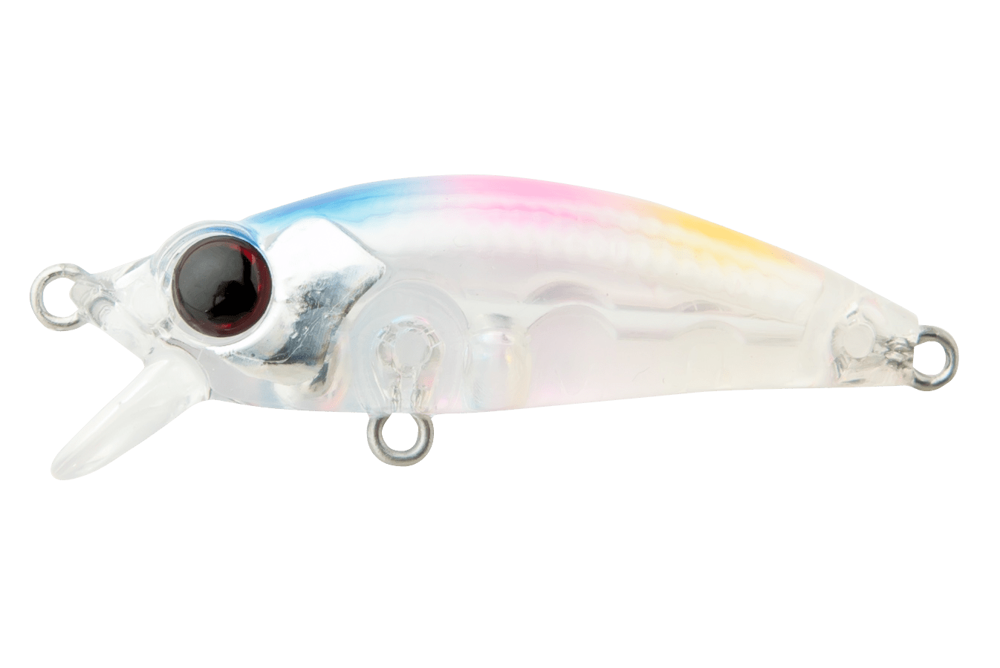
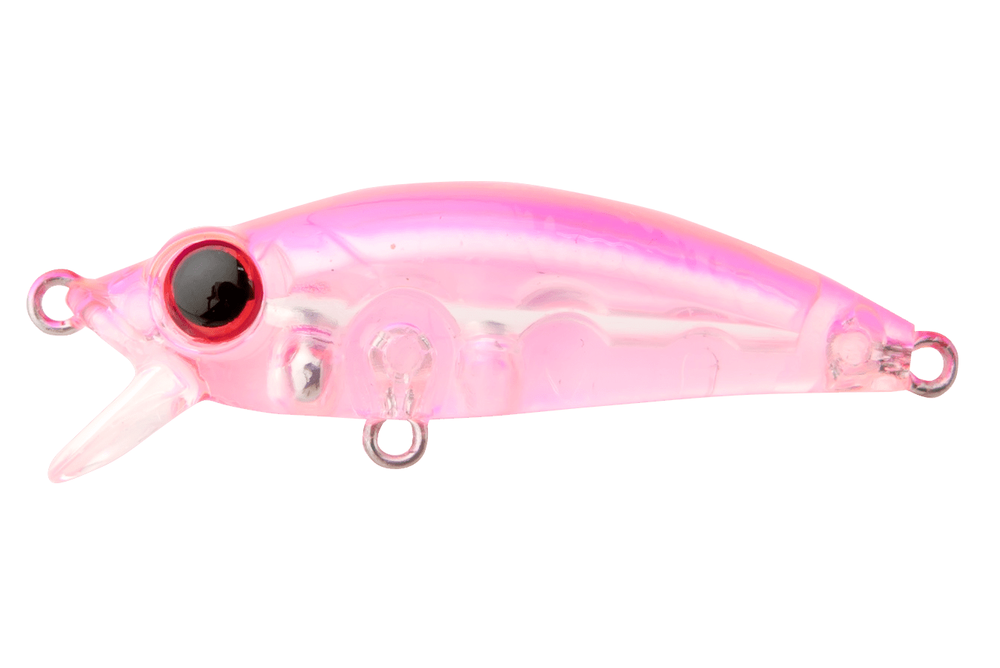
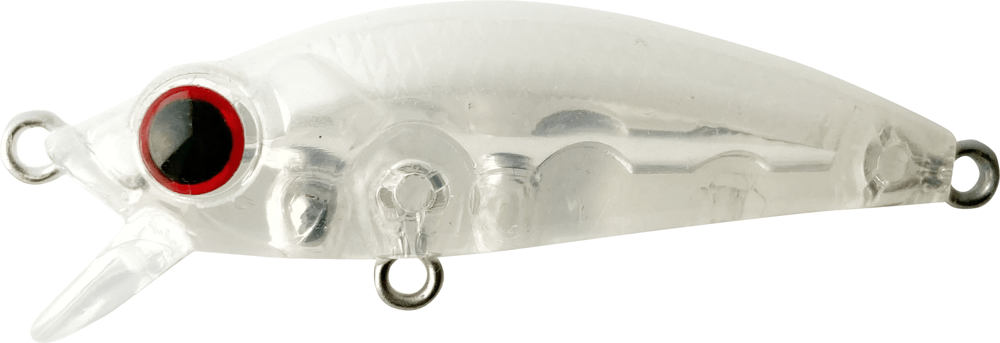
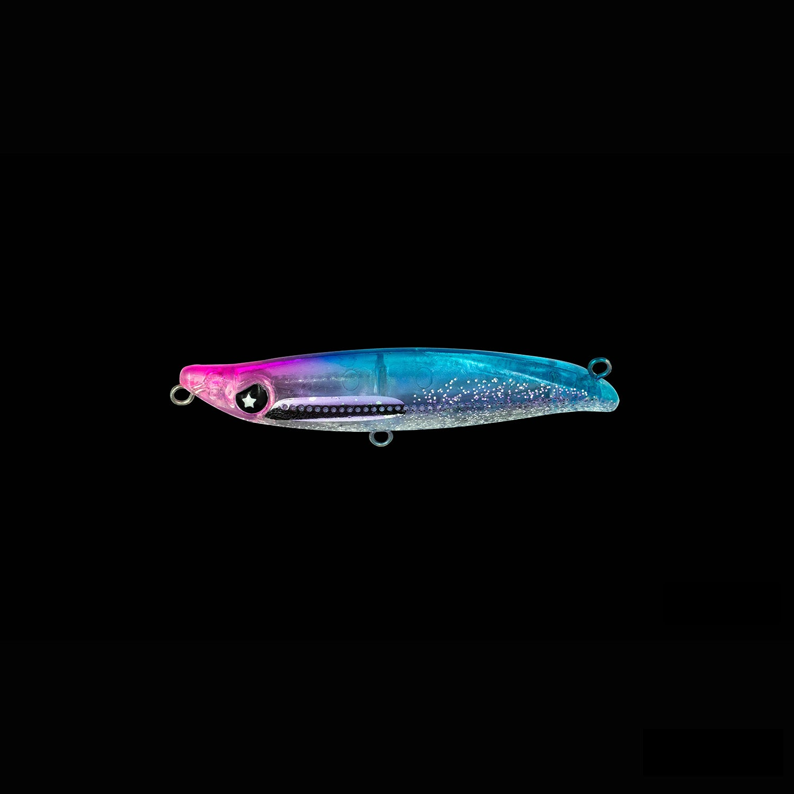

ビーナッツ
（13-NUT）
ビーナッツ（13-NUT）はBREADEN（ブリーデン）のメバリングプラグです。
「釣れるメバルはまだまだいる」。主なターゲットはメバルです。
メバルが感じる違和感を極限まで減らすことで、ほかのプラグにはない「食わせの魔力」を持たせたメバリングプラグ。中空ボディとソリッドボディを組み合わせたハイブリッド構造です。

画像出典:BREADEN公式HP
スペック
- メーカー
- BREADEN（ブリーデン）
- タイプ
- 40HF（ハイフローティング）・40F（フローティング）・40SP（サスペンド）・40SK（シンキング）
- 全長
- 40mm
- 重量
- 40HF：2.1g／40F：2.3g／40SP：2.4g／40SK：2.6g
- ボディ
- 中空＋ソリッドのハイブリッド構造（40SKは高比重タングステンシンカー）
- ターゲット
- メバル
- 価格
- 1,000円（税別）
▼今すぐチェック

ビーナッツの特徴
中空とソリッドのハイブリッドで、メバルの違和感を消す
-
ハイブリッド構造の低重心
浮力を確保しながらボディの下側をソリッドにすることで、内蔵シンカーだけに頼らない安定した低重心のバランスを実現。
-
屈折による乱反射（クリア系）
ウェイトゾーンのソリッド部分が、一般的な中空ボディでは出せない屈折による乱反射を生み、さらにバイトを誘う。
-
4タイプでレンジを攻め分け
水面のハイフローティングから、ディープを攻めるタングステンシンカーのシンキングまで4タイプ。
ビーナッツの使い方
最初に投げたいのは、スローなただ巻きで一番扱いやすい40Fです。常夜灯周りでは水面直下が狩り場になることが多いので、まずは40Fでゆっくり巻いてみましょう。
水面を意識している魚には40HFで、スプラッシュ→少しアクション→ポーズ。魚が浮き切らない時は40SPでデッドスローやストップ＆ゴー、沈み根や藻場のエッジなど深い場所は40SKで攻めます。
ビーナッツの得意な状況
常夜灯周りで、表層や水面直下に浮いたメバルを狙う時が得意です。
常夜灯のない場所や磯ではサスペンドの40SP、深場の大型メバルにはシンキングの40SKと、タイプを替えれば幅広い場所で使えます。
ワンポイント
カラーはタイプによってラインナップが違います（40F・40SPで12色、40HF・40SKで4色）。しまレモンRは夜光玉のラトル入りです。
ビーナッツのタイプの使い分け
| モデル | 重さ | 特徴 |
|---|---|---|
| 40HF | 2.1g | ハイフローティング。水面を意識した魚にスプラッシュ＆ポーズ |
| 40F | 2.3g | スローフローティング。スローなただ巻きで一番扱いやすい |
| 40SP | 2.4g | サスペンド。常夜灯のない場所や磯、居食いする魚に |
| 40SK | 2.6g | シンキング（タングステンシンカー）。沈み根や藻場のエッジなど深い場所に |
※数値は公式ページより。全長はいずれも40mmです。
オススメカラー
ビーナッツのカラーはタイプごとに違います（40F・40SP：12色、40HF・40SK：4色）。そのうち4色を紹介します（画像は公式のカラーチャートより）。

クリアまず1つ選ぶならこの色。クリアボディの乱反射で食わせる（40F・40SP）。

ケイムラキャンディケイムラで紫外線に反応して光るカラー（40F・40SP）。

ネオンピンクピンクのアピール系（40F・40SP）。

生ミルクグローグロー入りで、暗い場所や夜に（40HF・40SK）。
画像出典:BREADEN公式HP
ビーナッツに似ているルアー
-
 ミニマルエボロジー
BREADEN
詳細はこちら＞
ミニマルエボロジー
BREADEN
詳細はこちら＞
同じブリーデンのエギ型プラグ。トップからボトムまで。
-

シュリペン55 レガーレ 詳細はこちら＞表層をスローに攻められるメバル用のシンキングペンシル。
-
 ラプター50SS
レガーレ
詳細はこちら＞
ラプター50SS
レガーレ
詳細はこちら＞
流れの中でロールで食わせるメバルプラグ。